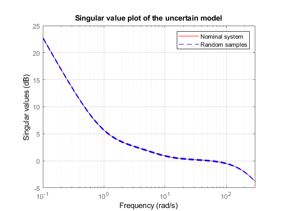
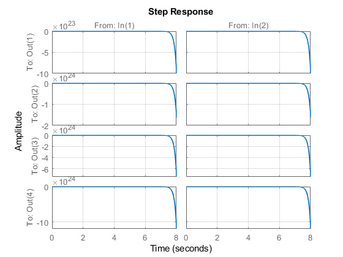
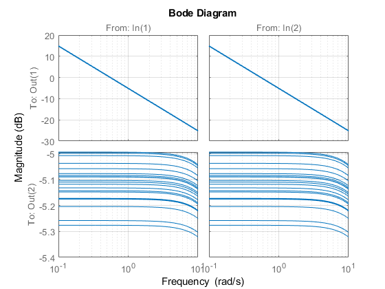

Two Wheeled Inverse Pendulum - Self Balancing Robot
Contents
- Robot NXT
- Model
- Parameter in Matlab
- Uncertainty of friction
- DC Motor Parameters
- State-Space Matrix Certain Model
- Uncertain SS
- Check Observability and Controllability
- Singular Value Plot
- Test Weight
- Performance Weighting Func
- Noise shaping filters
- Control action weights
- open-loop connection with the weighting functions
Robot NXT

Model


Parameter in Matlab

g = 9.81; % gravitasi [m/sec^2] m = 0.03; % wheel weight [kg] R = 0.04; % wheel radius [m] Jw = m * R^2 / 2; % wheel inertia moment [kgm^2] M = 0.6; % body weight [kg] W = 0.14; % body width [m] D = 0.04; % body depth [m] H = 0.144; % body height [m] L = H / 2; % jarak center of mass from the wheel axle [m] Jpsi = M * L^2 / 3; % body pitch inertia moment [kgm^2] Jphi = M * (W^2 + D^2) / 12; % body yaw inertia moment [kgm^2]
Uncertainty of friction
fm = ureal('fm',0.0022,'Percentage',20); fw = ureal('fw',0.0001,'Percentage',100); % fm = 0.0022; % friction coefficient between body & DC motor % fw = 0; % friction coefficient between wheel & floor
DC Motor Parameters
Jm = 1e-5; % DC motor inertia moment [kgm^2] Rm = 6.69; % DC motor resistance [Ħ] Kb = 0.468; % DC motor back EMF constant [Vsec/rad] Kt = 0.317; % DC motor torque constant [Nm/A] n = 1; % gear ratio
State-Space Matrix Certain Model
alpha = n * Kt / Rm; beta = n * Kt * Kb / Rm + fm; tmp = beta + fw; E_11 = (2 * m + M) * R^2 + 2 * Jw + 2 * n^2 * Jm; E_12 = M * L * R - 2 * n^2 * Jm; E_22 = M * L^2 + Jpsi + 2 * n^2 * Jm; detE = E_11 * E_22 - E_12^2; A1_32 = -g * M * L * E_12 / detE; A1_42 = g * M * L * E_11 / detE; A1_33 = -2 * (tmp * E_22 + beta * E_12) / detE; A1_43 = 2 * (tmp * E_12 + beta * E_11) / detE; A1_34 = 2 * beta * (E_22 + E_12) / detE; A1_44 = -2 * beta * (E_11 + E_12) / detE; B1_3 = alpha * (E_22 + E_12) / detE; B1_4 = -alpha * (E_11 + E_12) / detE; A1 = [ 0 0 1 0 0 0 0 1 0 A1_32 A1_33 A1_34 0 A1_42 A1_43 A1_44 ]; B1 = [ 0 0 0 0 B1_3 B1_3 B1_4 B1_4 ]; C1 = eye(4); D1 = zeros(4, 2); I = m * W^2 / 2 + Jphi + (Jw + n^2 * Jm) * W^2 / (2 * R^2); J = tmp * W^2 / (2 * R^2); K = alpha * W / (2 * R); A2 = [ 0 1 0 -J / I ]; B2 = [ 0 0 -K / I K / I ]; C2 = eye(2); D2 = zeros(2); % delete un-used variable clear alpha beta tmp clear E_11 E_12 E_22 detE clear A1_32 A1_33 A1_34 A1_42 A1_43 A1_44 B1_3 B1_4 I J K
Uncertain SS
G_unc1 = ss(A1,B1,C1,D1); G_unc2 = ss(A2,B2,C2,D2); % get(G_unc1) % get(G_unc2)
Check Observability and Controllability
Ob1=obsv(A1,C1); Ct1=ctrb(A1,B1); Ob2=obsv(A2,C2); Ct2=ctrb(A2,B2); % rank(Ct); % rank(Ob)
Singular Value Plot
figure(1) % step(G_unc1.Nominal,'r-',G_unc1,'b--'), grid % bode(G_unc1.Nominal,'r-',G_unc1,'b--'), grid sigma(G_unc1.Nominal,'r-',G_unc1,'b--'), grid axis([10^(-1) 3*10^2 -5 25]) xlabel('Frequency') ylabel('Singular values') title('Singular value plot of the uncertain model') legend('Nominal system','Random samples')
Test Weight
w=logspace(-1,1,100); bodemag(G_unc1,w) grid % step(G_unc1) % grid

Performance Weighting Func
Teori Performance Weighting


%%%% tol = 0.6*10.0^(-1); % nuWp = [0.4 1]; % dnWp = [5.0 tol]; gainWp = 0.95*10^(0); % %%%% Wp11 = gainWp*tf(nuWp,dnWp); Wp22 = 0.93; % Wp33 = 0.15; % %%%% nuWp = [1.1 1]; dnWp = [1.0 1]; gainWp = 0.22*10^(0); % %%%%% Wp44 = gainWp*tf(nuWp,dnWp); %--------------------- % 5 tol = 0.6*10.0^(-1); % nuWp = [0.4 1]; % dnWp = [5.0 tol]; % gainWp = 1.8*10^(0); % Wp55 = gainWp*tf(nuWp,dnWp); %---------------------------- Wp = [Wp11 0 0 0 0; 0 Wp22 0 0 0; 0 0 Wp33 0 0; 0 0 0 Wp44 0; 0 0 0 0 Wp55]; figure(2) bodemag(1/Wp11,'r-',1/Wp44,'b--',1/Wp55,'c-.',{10^(-3) 10^2}) grid title('Inverse performance weighting functions') legend('W_{p11}^{-1}','W_{p44}^{-1}','W_{p55}^{-1}') %
Noise shaping filters


Wn11 = 0.1*tf([1 2], [0.001 1]); % Wn22 = 1.0*tf([1 2], [0.001 1]); % %------------------------------------- Wn = [Wn11 0 0 Wn22]; % Sensor Noise figure(3) bodemag(Wn11,'r-',Wn22,'b--',{10^(-1) 10^4}) grid title('Sensor noise weight') legend('Wn11','Wn22') %
Control action weights


nuWu = [1.2 1]; % dnWu = [0.0024 1]; % gainWu = 2.0*10^(-2); % Wu11 = gainWu*tf(nuWu,dnWu); %------------------------------------- Wu = [Wu11 0 0 Wu11]; figure(4) bodemag(1/Wu11,'r-',{10^(-1) 10^4}) grid title('Inverse control weighting functions') % s = tf('s'); Intg = 1/(s+10^(-6)); %

open-loop connection with the weighting functions
2 dof controller
systemnames = ' G_unc1 Wn Wp Wu Intg '; inputvar = '[ ref{4}; noise{2}; control{2} ]'; outputvar = '[ Wp; Wu; ref; -G_unc1(1:2); -G_unc1(3:4)-Wn; Intg ]'; input_to_G_unc1 = '[ control ]'; input_to_Wn = '[ noise ]'; input_to_Wp = '[ ref(1:4)-G_unc1(1:4); Intg ]'; input_to_Wu = '[ control ]'; input_to_Intg = '[ ref(1)-G_unc1(1) ]'; sys_ic = sysic; % C_hh = [1 0]; % % systemnames = ' G_unc2 Wn Wp Wu Intg '; % inputvar = '[ ref{4}; noise{2}; control{2} ]'; % outputvar = '[ Wp; Wu; ref; -G_unc2(1:2); -G_unc2(3:4)-Wn; Intg ]'; % input_to_G_unc = '[ control ]'; % input_to_Wn = '[ noise ]'; % input_to_Wp = '[ ref(1:4)-G_unc2(1:4); Intg ]'; % input_to_Wu = '[ control ]'; % input_to_Intg = '[ ref(1)-G_unc2(1) ]'; % sys_ic2 = sysic; %